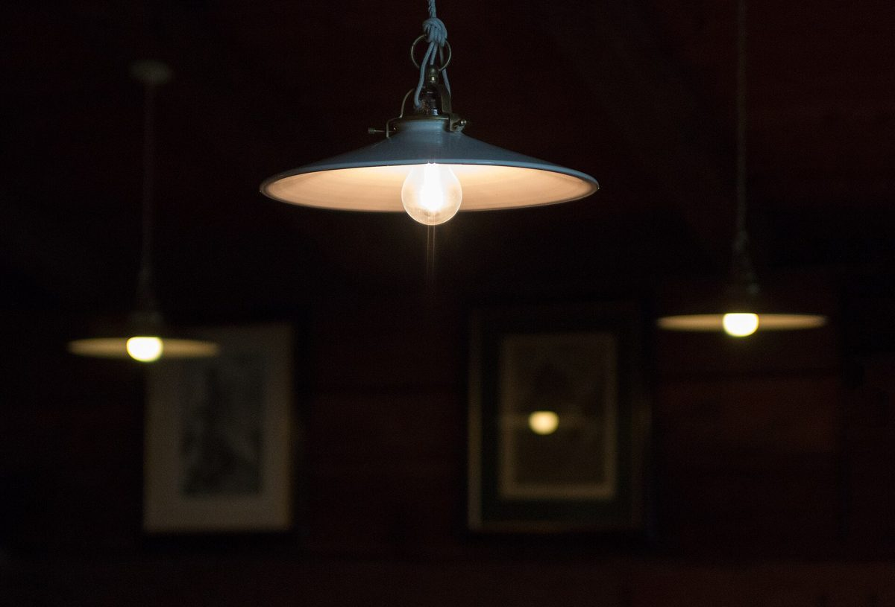
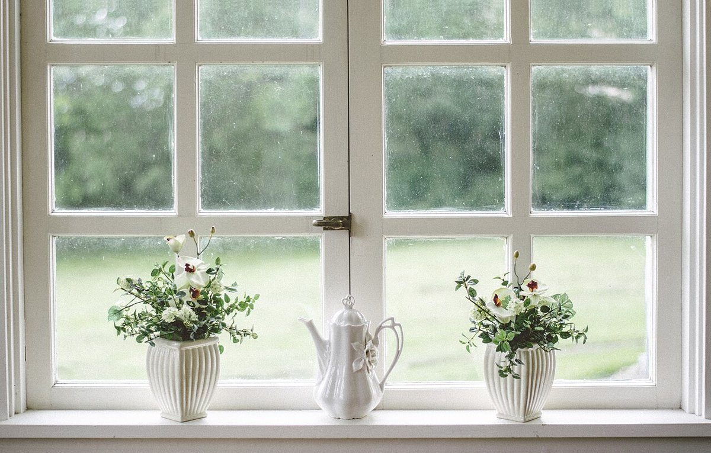
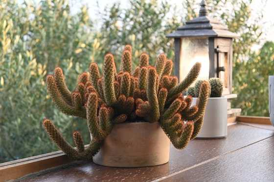
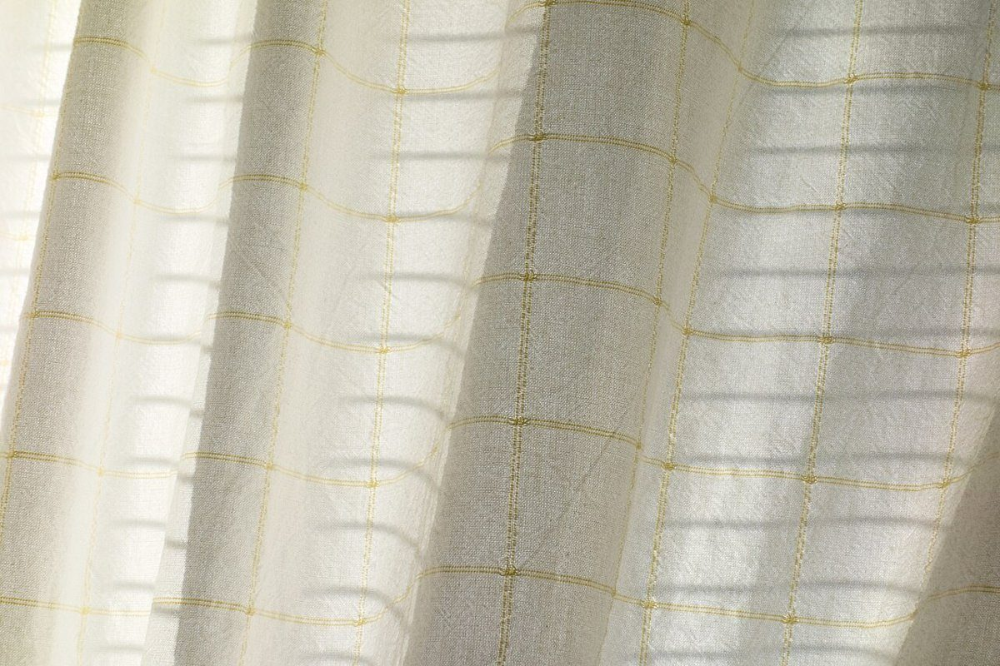
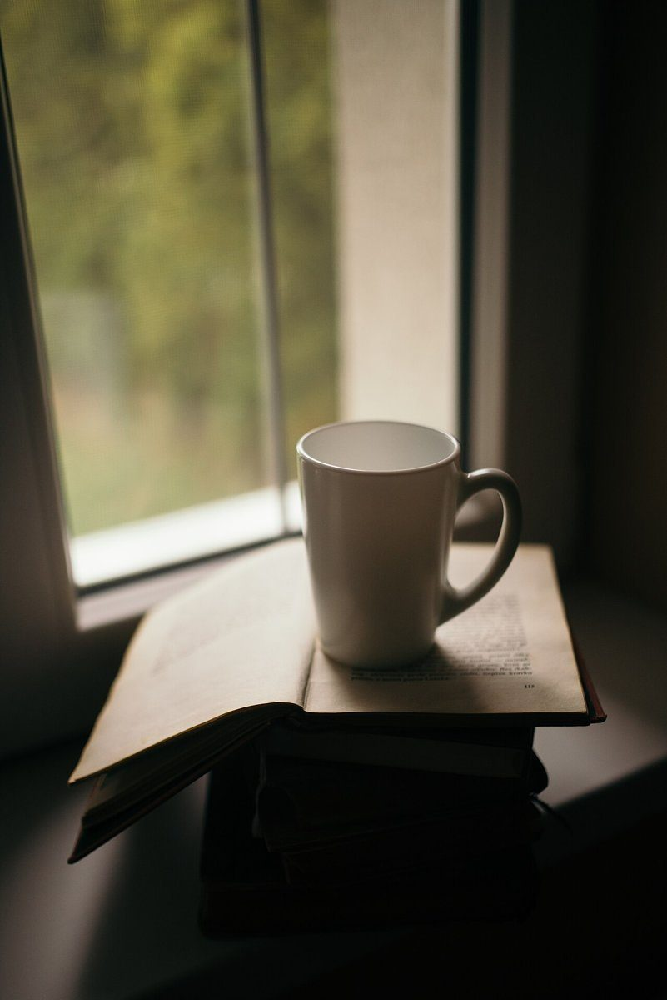
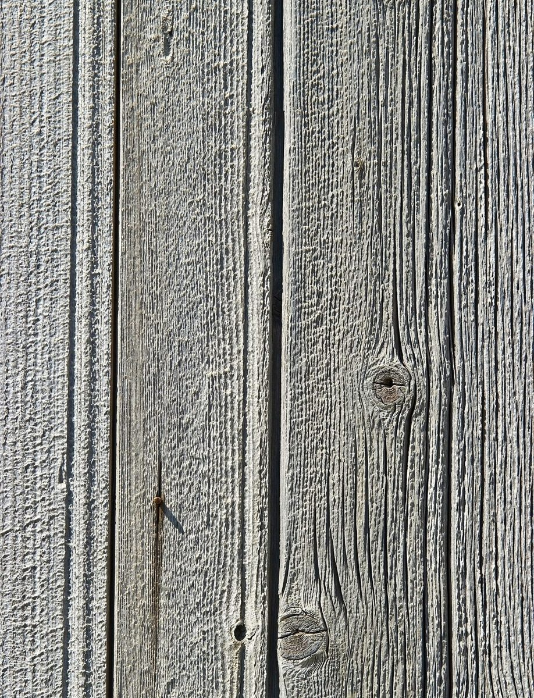
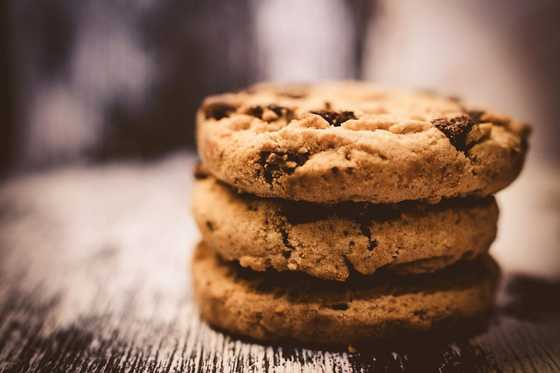
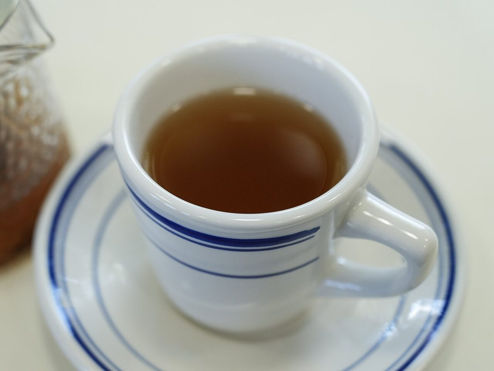
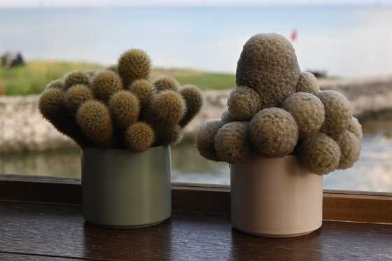

Noppoランチ
週替わりのごはん。地元・佐賀県産の旬の食材を使い、メインは肉や魚などの週替わりと紹介されています。
価格: 準備中

このページの写真はフリー素材のイメージです。店舗の実際の様子・料理ではありません(ご契約後、お店の写真に差し替えます)。
Noppo(のっぽ)は、伊万里市民図書館の近く、住宅街の中にある古民家のカフェです。昔ながらの和室を活かした空間に、座敷席とテーブル席があります。
店主ご夫妻は2018年に東京から奥さまの郷里・伊万里へ移住し、地域おこし協力隊を経て、2021年5月に開業しました。「カフェづくり、空間づくりがしたい」という奥さまの長年の夢が出発点だったと紹介されています。
コンセプトは「大人がゆっくりできるお店」。「こんな場所があったらいいな」を形にした、時間を気にせず過ごせる場所を目指しています。
店名の「のっぽ」は、背が高いことに由来すると紹介されています(取材記事より)。




取材記事などで紹介されている内容です。価格・提供日・最新のメニューは「準備中」です(最新情報はInstagramをご覧ください)。
週替わりのごはん。地元・佐賀県産の旬の食材を使い、メインは肉や魚などの週替わりと紹介されています。
価格: 準備中

動物性食材を使わず、国産野菜を中心にした一膳。予約制と紹介されています。
価格: 準備中

日替わり・週替わりで登場する洋食メニュー。内容はお店の発信をご確認ください。
価格: 準備中

伊万里産の卵を使い、時間をかけて焼き上げるふわふわのデザート。サンドやドリンクセットも紹介されています。
価格: 準備中
スイーツとあわせて、ゆっくりお茶の時間を。ドリンクの種類は準備中です。
価格: 準備中

ごはんのあとの一杯。種類は準備中です。
価格: 準備中
営業時間・定休日・席数・予約方法・駐車場: 準備中(確認でき次第掲載します)
以下は掲載イメージとして制作側が作成した例文で、実在のお客様の声ではありません。
イメージ例和室の落ち着いた空気で、つい長居してしまいそうな店内でした。ランチのあとにデザートまで、ゆっくり楽しみたいです。
イメージ例週替わりのごはんが楽しみで、また来たくなる、そんなお店になりそうです。
イメージ例古い家の灯りと窓辺の景色が心地よく、大人の休日にぴったりの場所だと思います。
伊万里市民図書館の近くの住宅街にあります。最新の営業日はInstagramをご確認ください。

掲載写真はすべてフリー素材(Wikimedia Commons)です。
.jpg){kind=link}
.jpg){kind=link}


.jpg){kind=link}


.jpg){kind=link}